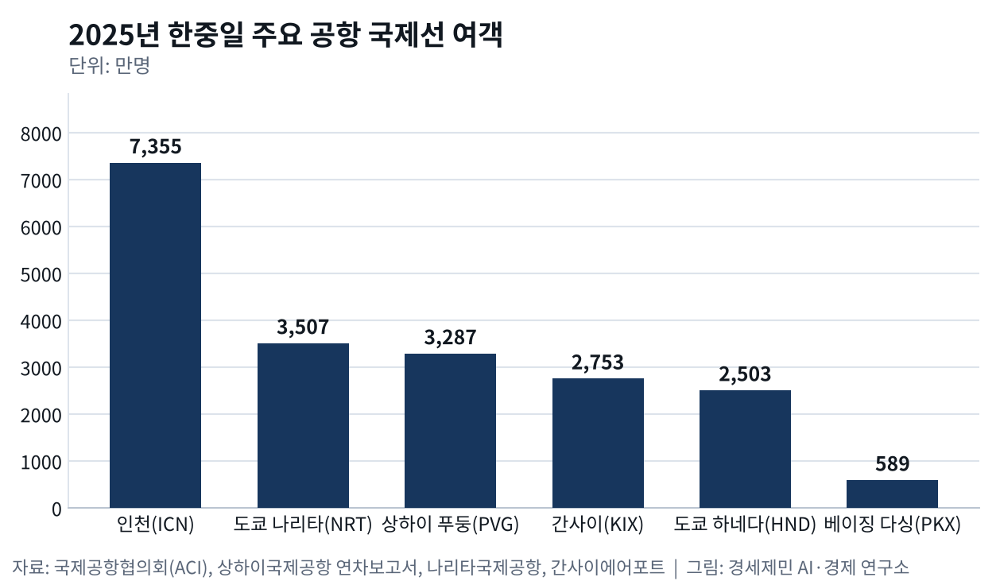
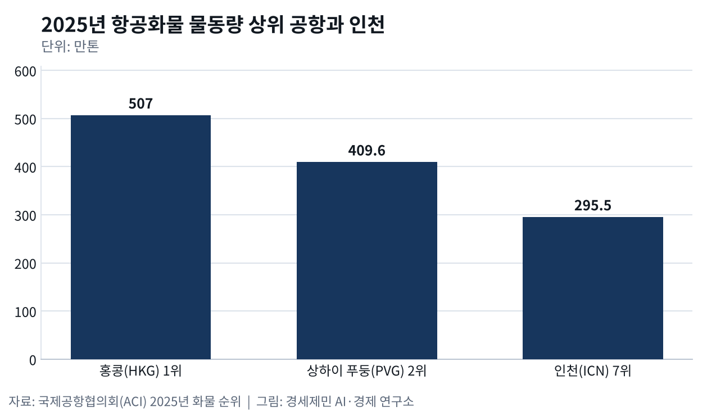
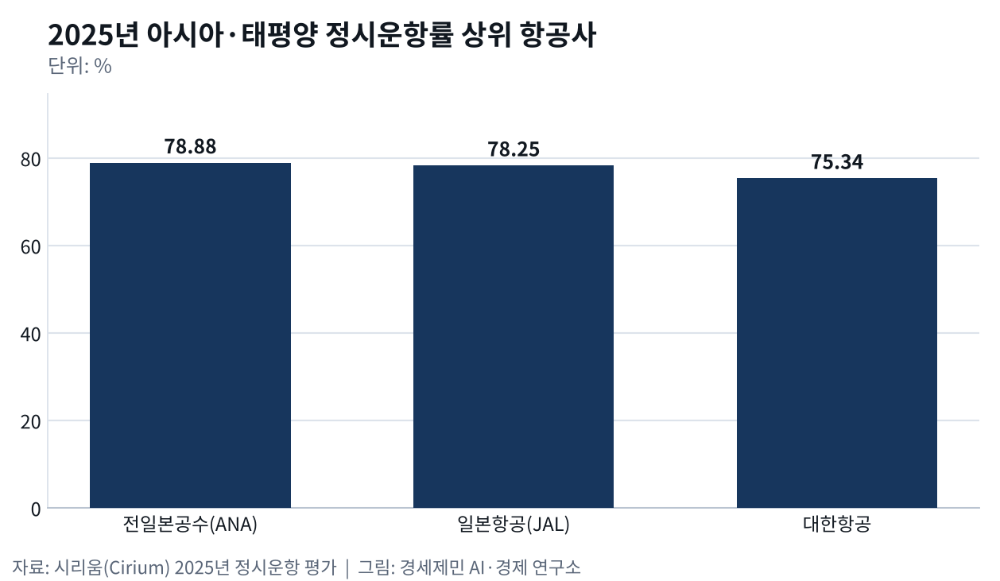

인천 국제선 여객 세계 1위, 화물 허브는 푸둥에 밀렸다
- 올해 상반기 국제선 3839만명, 히스로·두바이 제쳤다
- 푸둥 화물 409만톤 세계 2위, 인천 295만톤 7위
- 중국 240시간 무비자 경유, 다싱 환승 12% 늘었다
인천국제공항(ICN)이 올해 상반기 국제선 여객 3839만명으로 국제공항협의회(ACI) 잠정 집계 세계 1위에 올랐다. 1년 전보다 6.3% 늘었다. 화물은 사정이 다르다. 지난해 상하이 푸둥국제공항(PVG)은 409만6016톤으로 세계 2위를 지켰고 인천은 7위였다. 같은 블록 안에서 여객과 화물 순위가 갈렸다.
공항 경쟁력은 숫자 하나로 가려지지 않는다. 이 글은 동북아 경제블록 안 한중일 국제공항 여섯 곳을 여섯 잣대로 잰다. 상편은 여객·화물·정시성을, 하편은 고부가가치·배후단지·정비를 본다. 2003년 동아시아 주요 공항을 분석한 국제 학술지 연구도 서비스, 수요, 경영, 시설, 공간 다섯 요인으로 공항을 평가해 네 등급으로 나눴다. 수치는 2025년 공식 집계를 기본으로 하고 올해 발표를 더한다.
여객 허브, 국제선은 인천이 가장 크다
ACI 2025년 집계를 보면 인천 국제선 여객은 7355만4772명으로 두바이와 런던 히스로에 이어 세계 3위다. 상하이국제공항 연차보고서를 보면 푸둥 국제선 여객은 3286만7200명으로 1년 전보다 21.03% 늘었다. 도쿄는 나리타국제공항(NRT) 3507만명과 하네다공항(HND) 2503만명으로 수요가 두 곳에 나뉘었다.

간사이국제공항(KIX) 국제선은 2753만명으로 15% 늘어 1994년 개항 이후 가장 많았다. 베이징 다싱국제공항(PKX) 국제·지역 여객은 589만명으로 24.56% 늘었다. 간사이 외국인 여객은 2173만명으로 처음 2000만명을 넘었다. 인천 총여객 증가율은 4.1%였다. 국제선 규모는 인천이 가장 크고 증가 속도는 중국과 간사이가 빨랐다.
환승객은 인천에서 줄었다. 인천국제공항공사 발표를 보면 2025년 환승객은 804만6572명으로 1년 전보다 2.3% 줄었다. 공사는 중국·동남아발 미주·유럽 직항 확대와 러시아 영공을 지나는 중국 항공사가 환승 수요를 흡수한 결과로 분석했다. 도착과 출발을 따로 세는 나리타 환승객도 211만6890명으로 14% 줄었다.
올해 1월 나온 국제 학술지 연구는 아시아·태평양 허브 16곳 환승 연결성을 2019년 9월과 2023년 9월 운항 일정으로 견줬다. 인천과 나리타와 타이완 타오위안이 태평양 횡단 연결에서 우위를 지켰고 인천은 유효 연결편 수 1위였다. 베이징 서우두와 푸둥은 코로나 이후 크게 뒤처졌다. 연구진은 연결편 수가 적은 공항에 멈춘 노선을 되살리라고 권했다.
화물 허브, 푸둥은 8.3% 늘고 인천은 0.3% 늘었다

ACI 2025년 화물 순위에서 홍콩이 507만256톤으로 1위, 푸둥이 409만6016톤으로 2위다. 인천은 295만4684톤으로 7위다. 인천국제공항공사는 인천 화물이 0.3% 늘었다고 밝혔다. 상하이국제공항 연차보고서를 보면 푸둥 화물은 8.3% 늘었다. 푸둥 국제선 화물만 332만톤으로 9.59% 늘었다.
인천 화물 증가는 여객기 화물칸에서 나왔다. 공사 자료를 보면 전용 화물기 물동량은 192만9179톤으로 0.7% 줄었고 여객기 하부 화물칸 물량은 102만5505톤으로 2.0% 늘었다. 2024년 국제화물 295만톤 가운데 환적이 118만톤으로 약 40%다. 나리타도 국제화물 203만9731톤 가운데 환적이 77만톤으로 약 38%다.
정시성, 한중일 대형 공항은 세계 10위 밖이다
항공 정보업체 시리움(Cirium)은 1월 2일 2025년 정시운항 평가를 발표했다. 600여 개 실시간 자료원으로 예정 시각 15분 안에 출발한 비율을 쟀다. 대형 공항 10위 안에 인천, 하네다, 나리타, 푸둥, 베이징은 없다. 1위 칠레 산티아고는 87.04%였다. 한중일에서는 오사카 이타미공항만 중형 공항 4위(86.04%)에 올랐다.

항공사 순위에서는 아시아·태평양 10위 안에 전일본공수(ANA) 78.88%, 일본항공(JAL) 78.25%, 대한항공 75.34%가 들었다. 국토교통부 2025년 항공교통서비스 평가에서 인천공항 신속성 등급은 A에서 B로 내려갔다. 국토교통부는 이번 평가부터 공항별 여객 혼잡도를 반영했다고 밝혔다. 김포공항은 A, 김해공항은 C++ 등급이었다.
지금 경쟁은 비자와 제도에서 갈린다
중국 국가이민관리국은 2024년 12월 17일 무비자 경유 체류를 72시간과 144시간에서 240시간으로 늘렸다. 대상은 미국과 영국 등 54개국 국민이고 허용 통상구는 39곳에서 60곳으로 늘었다. 지난해 무비자 정책 효과를 분석한 연구는 무비자 허용이 중국행 월평균 여객을 늘리고 운임을 낮췄다고 밝혔다. 다싱은 2025년 환승 여객이 약 12% 늘었다고 밝혔다.
인천은 올해 흐름을 되돌렸다. 1~8월 인천 환승객은 598만명으로 1년 전보다 20.1% 늘어 국내 공항 국제선 여객 증가율 9.8%보다 두 배 넘게 높았다. 한국경제는 두바이와 히스로가 미국과 이란 전쟁 여파로 환승 기능이 약해져 상반기 순위가 내려갔다고 전했다. 올해 나온 연구는 러시아 영공을 계속 쓴 중국 항공사가 중국~유럽 시장을 주도했다고 분석했다.
※ 이 기사는 AI 프로그램 클로드를 활용해 작성했습니다.
참고문헌
기관 자료
- 中华人民共和国国家移民管理局, 中国过境免签政策全面放宽优化, 2024년 12월 17일. https://www.nia.gov.cn/n897453/c1688948/content.html
- Cirium, "Aeromexico Named Most On-Time Airline; Qatar Airways Wins Platinum", 2026년 1월 2일. https://www.cirium.com/thoughtcloud/most-on-time-airlines-airports-2025-revealed-cirium/
- 인천국제공항공사, "인천공항, 지난해 역대 최다 항공운송실적 달성", 2026년 1월 25일. https://www.airport.kr/co_ko/664/subview.do
- 成田国際空港株式会社, 2025년 월별 공항 운용 상황(Monthly Traffic Statistics), 2026년. https://www.narita-airport.jp/files/f5a60c4bb2459d7ac6e69207d24c44879990da4524821f4171a40bd9960a4a0c
- 関西エアポート, 関西国際空港·大阪国際空港·神戸空港 2025年12月利用状況, 2026년 1월 26일. https://assets.kansai-airports.co.jp/e7d7ab78-j_260126_trafficreport_december2025.pdf
- Airports Council International, "What Are the Busiest Airports in the World in 2025?", 2026년 4월 20일. https://blog.aci.aero/airport-economics/busiest-airports-in-the-world-2025/
- 국토교통부, 2025년 항공교통서비스 평가 결과, 2026년 4월 17일. https://www.molit.go.kr
- 上海国际机场股份有限公司, 『2025年年度报告』, 2026년 4월 30일. https://money.finance.sina.com.cn/corp/view/vCB_AllBulletinDetail.php?stockid=600009&id=12285643
연구 논문
- Park, Y., "An analysis for the competitive strength of Asian major airports", 『Journal of Air Transport Management』 9(6), 2003년 11월, pp.353-360. https://doi.org/10.1016/S0969-6997(03)00041-3
- Zheng, C., Sun, X., & Wandelt, S., "On the success of visa waiver policies: Post-pandemic evidence from China", 『Transport Policy』 171, 2025년, pp.753-763. https://doi.org/10.1016/j.tranpol.2025.06.002
- Chang, Y.-C., & Yu, H.-T., "Identifying competitive position for sixteen major Asia-Pacific hubs after the COVID-19 pandemic", 『The Asian Journal of Shipping and Logistics』 42(1), 2026년, pp.54-68. https://doi.org/10.1016/j.ajsl.2025.12.001
- Peng, W., Wang, W., Bai, X., & Wu, X., "Evolution of China's intercontinental air network affected by the COVID-19 pandemic and geopolitical disruptions", 『Journal of Air Transport Management』 133, 2026년, 102963. https://doi.org/10.1016/j.jairtraman.2025.102963
언론기사
- 강준완, "인천공항 새 역사…국제선 여객 세계 1위", 한국경제, 2026년 8월 13일. https://www.hankyung.com/article/2026081301661
- 박소희, "고유가에도 국제선 여객 10% 늘었다…일본·중국 노선 20%대 급증", 이비엔(EBN), 2026년 9월 26일. https://www.ebn.co.kr/news/articleView.html?idxno=1725682
※ 이 기사는 인공지능을 활용해 작성했습니다. 사실관계는 저자가 확인했습니다.
관련기사
저작권자 © AI경세제민 무단전재 및 재배포, AI학습 및 활용 금지